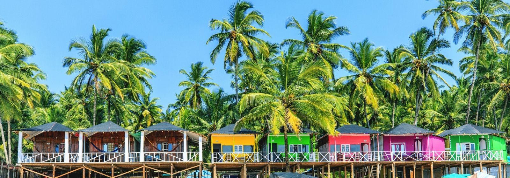
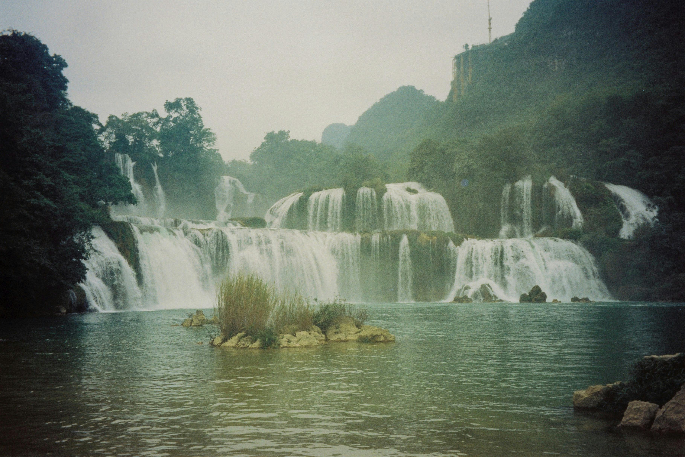
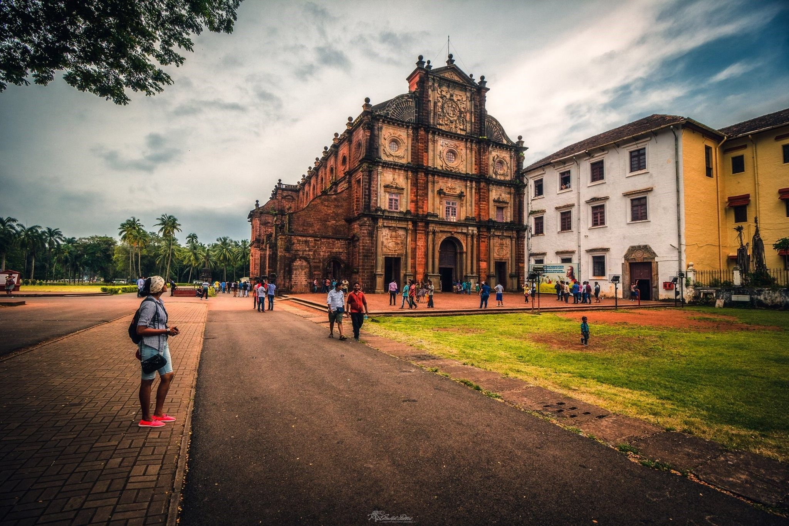
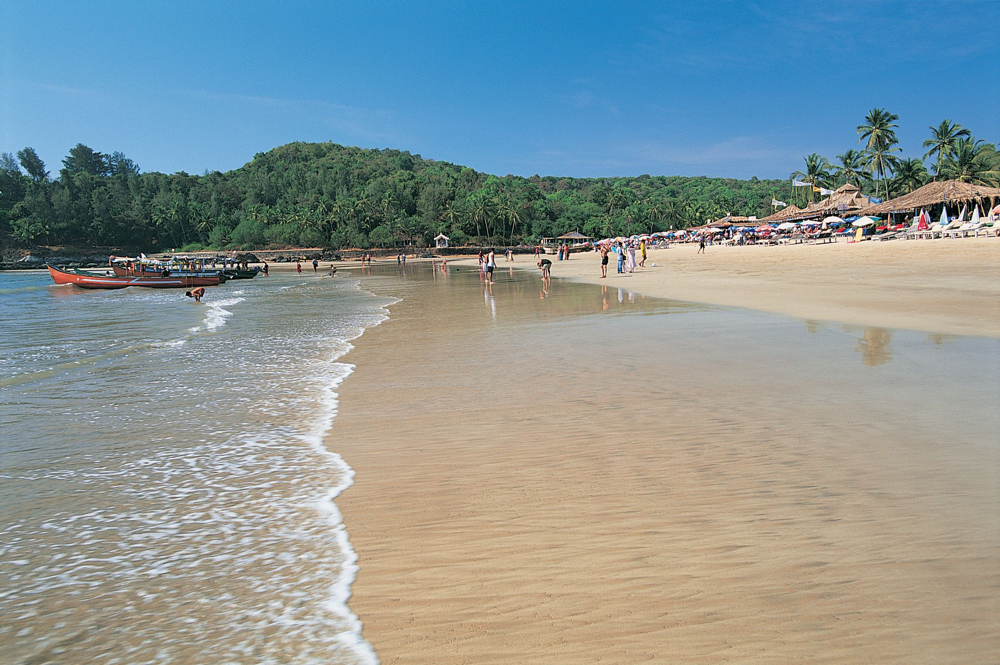
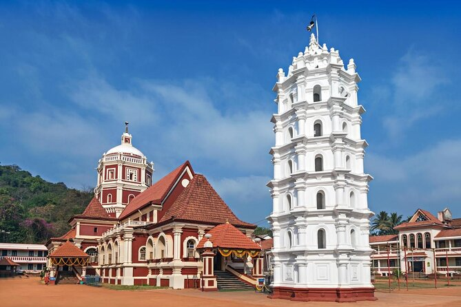
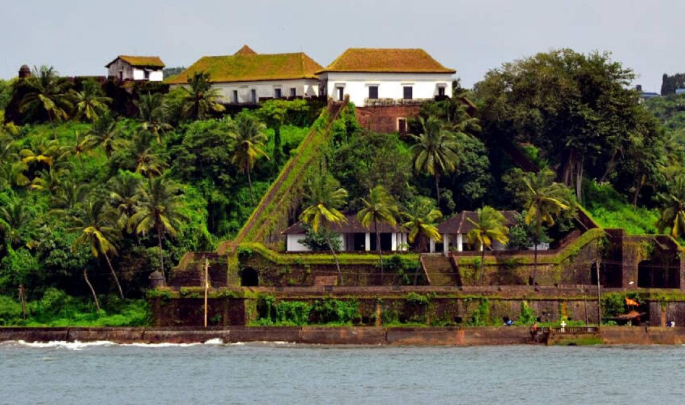
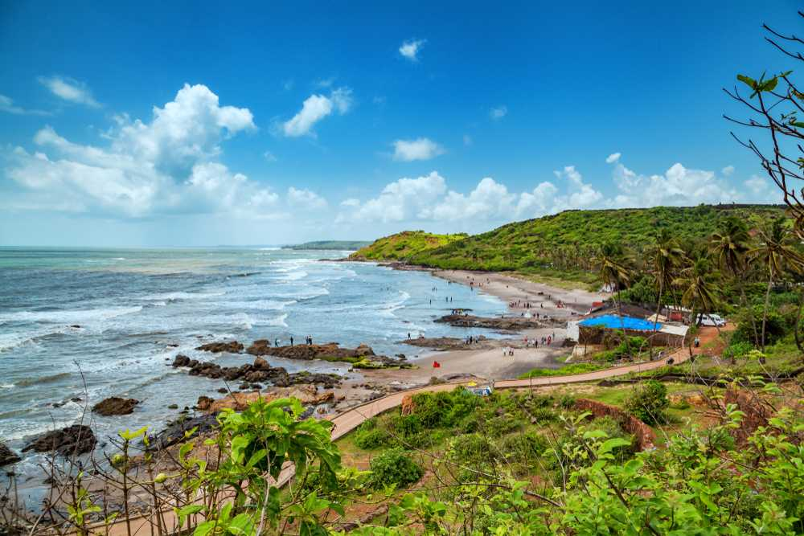
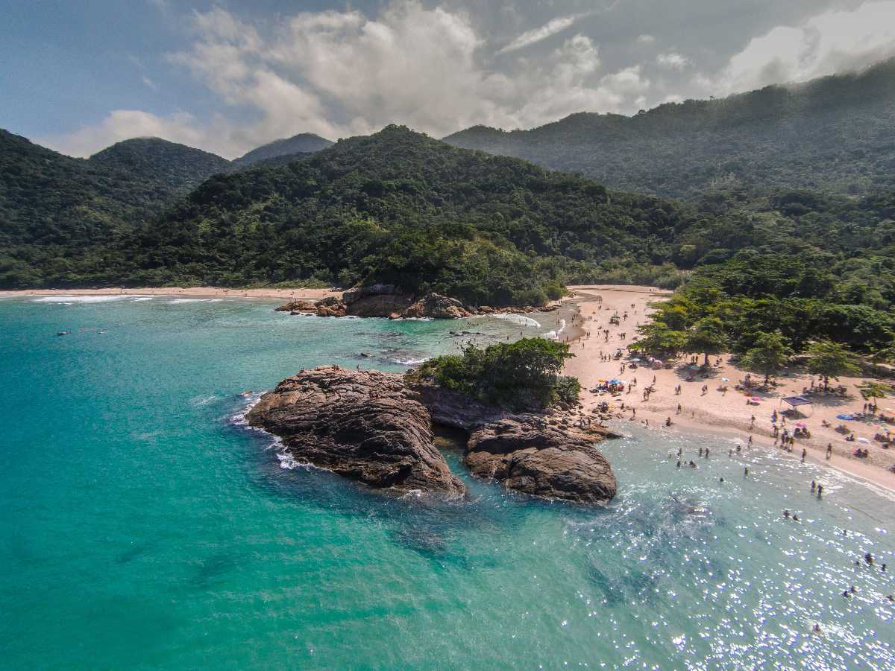

BackPackers

Of seafood,sunsets, and psytrance
India’s coastal state of Goa is known for its sandy beaches and lively party scene, but there’s much more to this tiny state than meets the eye. Many of the best things to do in Goa don’t involve beaches, from the UNESCO-listed churches of Old Goa—which were built when the state was under Portuguese rule—to the massive cascades at Dudhsagar Falls. Goan cuisine is not to be missed, and if you’re a fan of fresh seafood, you’ll find plenty to keep your belly full.
Top 10 attractions in Goa

Dudhsagar Falls
Dudhsagar Falls is among the tallest waterfalls in India. At the base of the four-tiered falls is a huge swimming area—that’s as as far as most travelers go. A railway bridge crosses right under the falls, and if you happen to visit when a train is passing by you're sure to get some great photos.

Old Goa
A UNESCO World Heritage Site, Old Goa is a historic site and former capital of the state of Goa. Visitors come to tour the impressive buildings and learn more about the fate of this town that was abandoned in the 18th century.

Baga Beach
The golden sands at Baga Beach have been popular with backpackers since the hippy heyday of the 1970s when western tourists made a second home for themselves along the beaches in this part of Goa.

Fort Aguada
Built at the confluence of the Arabian Sea and the Mandovi River in Goa, Fort Aguada was once one of the country’s most important sea defenses. Nowadays, visitors can tour the remains of the buildings, enjoy panoramic views from the top of the walls, and learn about Goa’s history under Portuguese colonial rule.

ShantaDurga Temple
This temple, dedicated to the goddess Shantadurga, dates back to the first half of the 18th century (though there was likely some kind of temple here for much longer). Its architecture is quintessentially Goan, with rust-red exteriors and white trim coupled with arched windows and stained glass.

Reis Magos Fort
Situated on the banks of the Mandovi River, this scenic fort was built by the Portuguese in 1551 to protect the Mandovi estuary, and was reconstructed in 1707. It was abandoned for much of the 19th and 20th centuries before being turned into a prison. It was later restored and turned into the tourist attraction that it is today.

Anjuna Beach
Anjuna Beach is among the most popular beaches in North Goa, stretching almost 2km. From family outings to adrenaline-filled adventures, Anjuna Beach is famed for its golden coastline, nightclubs, beach shacks, watersports, full-moon parties and flea markets.

Divar Island
Located at a distance of 10 km from Panjim in Goa, Divar Island is a slice of heaven tucked away in dense woods amidst the beauty of nature. Connected to Old Goa only through ferry service, this island is synonymous with natural beauty, serenity and tranquillity. Commonly recognised as a ‘village stuck in time’; the area is still unexplored and unexploited by tourism or commercialisation as it is disconnected from city life.

Dona Paula
Dona Paula is one of the most popular tourist hangouts in Goa famous for its vast stretch of beach. The small beach is also popular as the Lover's Paradise and features a jetty (Dona Paula Jetty) adjacent to it, which provides an ethereal view of the Arabian Sea and Mormugao harbour.

Grande Island
Originally known as Iha Grande, Grande Island in Goa is one of the most sought after destinations, owing to its serene and tranquil environment and the availability of a plethora of thrilling activities like snorkeling, dolphin spotting, and scuba diving.
Goa Tour Packages

3 Days 4 Nights Goa Holiday Tour Package
INR 17500 (-25%off)
13,099/-

Goa with Amazing Water Sports Fun
INR 12500 (-16%off)
10,099/-

Goa With Family and Kids
INR 22500 (-30%off)
17,999/-

Goa-Winter Special
INR 20500 (-40%off)
15,999/-